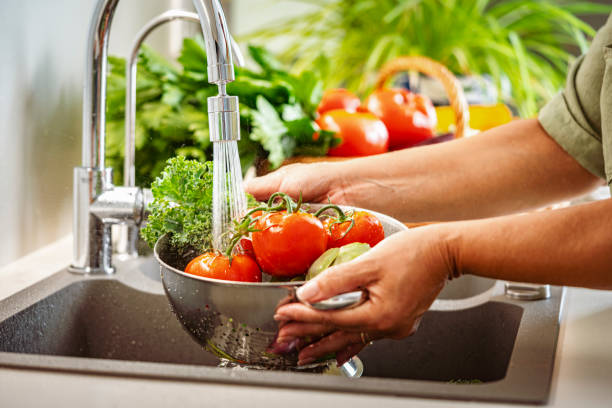
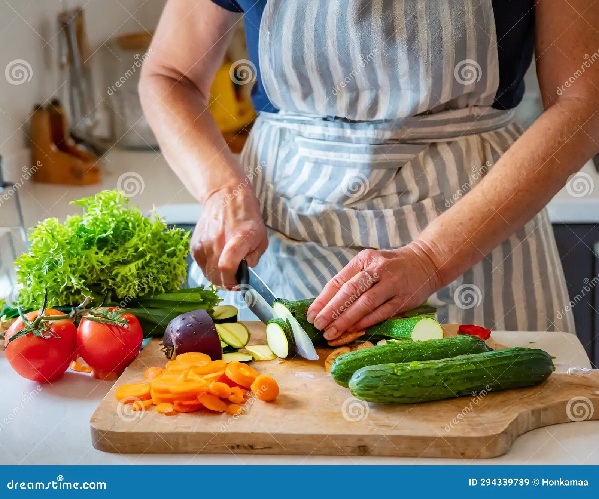
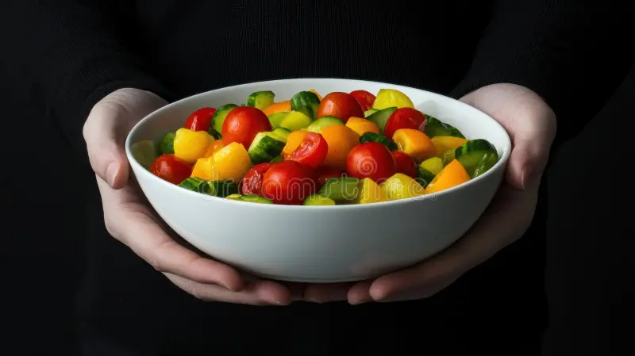
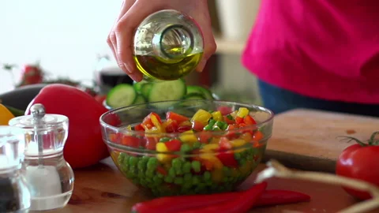

Ingredientes
- Lechuga 250 gr
- Tomate 100 gr
- Cebolla 50 gr
- Pepino 125 gr
- Aceite de oliva 5 gr
- Vinagre 7 gr
- Sal 7 gr
Paso a paso
- Lavar bien todas las verduras.

- Cortar la lechuga, el tomate, el pepino y la zanahoria en trozos pequeños.

- Mezclar todas las verduras en un bol grande.

- Añadir aceite de oliva, vinagre y sal al gusto.

- Remover bien para que se mezclen los sabores.
- Servir fresca.

Resultado final